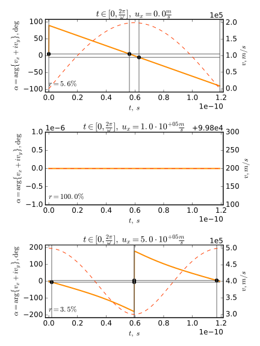

A common topic in high school physics is the electromagnetic velocity filter/selector ( Wienfilter). It turns out that the reason it works has little to do with what students are thought in school.
Disclaimer: I'm not an export on any of this. This has been reviewed by a hand full of people but other than that the mathematical result below remains untested. I greatly appreciate all comments!
Electromagnetic velocity filters have applications in mass-spectrometry (=in trying to classify charged particles such as ions based on their mass-charge-ratio). It is possible to produce streams of such particles. Unfortunately, particles in such streams have varying speeds but the methods used for the actual classification require the incoming stream of particles to have a constant and known one. Electromagnetic velocity Filters are used to deflect particles of unwonted speeds and only let particles already moving at a specific speed $\bar{v}$ pass to the next step in the classification process. A simple illustration of an EM Filter can be seen on the right. All relative locations given (left, right, horizontal, …) are in reference to this illustration (you could obviously rotate the entire setup without affecting the way it works). In the setup a homogeneous magnetic field $\vec{B}$ points into the drawing plain and a homogeneous electric field $\vec{E}$ is perpendicular to $\vec{B}$. The steam of particles is sent in on the left and (initially) the particles velocities are at right angles to both the magnetic and the electric field. The electromagnetic force on each particle is the sum of the electric and magnetic forces ($\vec{F_m}$ and $\vec{F_e}$ respectively). So since the magnitude of the magnetic force depends on the speed, it's obvious that there has to be some speed $\bar{v}$ such that electric and magnetic forces cancel perfectly. In this case the net force on the particle is zero so it will not be deflected but move on a horizontal line. For particles moving at a speed other than $\bar{v}$ there must be a net force hence they are deflected thus filtered out from the particle stream. Solving the described equation yields that the critical speed is $\bar{v} = E/B$ ($B$ and $E$ are the magnitudes of the magnetic and electric fields respectively. The full equation is known as the Wien Condition [see here]). A full derivations can be found online.
As previously stated this is the explanation you will likely find right away when researching the topic. At first glance it seems reasonable and when I was introduced to the problem (in High school) I was satisfied with this. But recently my attention was drawn back to the problem and I realized that this explanation is deeply floored.

In fact the explanation is only valid for the very first moment. This is easy to understand when considering edge cases. Suppose the particle placed in the filter has no initial velocity (it is $0$). At first, it won't be affected by the magnetic field. So the only force acting on the particle will be the eclectic force. According to the explanation given above this will cause the particle to move on a vertical line. Here is the problem though, moving on a vertical line means that the velocity is non-zero and the magnetic force has to be consider. This magnetic force will be perpendicular to the magnetic field and the velocity, hence the particles velocity will be in the plane drawn on the left and can be described using two coordinates $\Leftarrow \vec{v} := \left(v_x, v_y, 0 \right)^T$. As there is no way the particle will ever leaf the xy-plain, the z components of velocity and position are just $0$. To simplify the equations the z components will be dropped were ever convenient. Suppose the electric field $\vec{E}$ is given by $\left(0, -E, 0 \right)^T$ and the magnetic field $\vec{B}$ by $\left(0, 0, B \right)^T$. For simplicity, define the constants $\omega := qB/m$ ($q$ is the charge of the particle, $\omega$ is the Cyclotron angular frequency) and $\bar{v} := E/B$ (just as above). Than the definition of the electromagnetic force can be simplified to the following set of linked differential equations:
$$ \vec{F}_{EM} = q( \vec{E} + \vec{v} \times \vec{B}) \Leftrightarrow \underbrace{ \left( \begin{matrix} \dot{v}_x \\ \dot{v}_y \end{matrix} \right) }_{\dot{\vec{v}}} = \underbrace{ \left( \begin{matrix} 0 & -\omega \\ \omega & 0\end{matrix} \right) }_{A} \underbrace{ \left( \begin{matrix} v_x \\ v_y \end{matrix} \right ) }_{\vec{v}} + \underbrace{ \left( \begin{matrix} 0 \\ -\omega \bar{v} \end{matrix} \right ) }_{\vec{b}} $$This can be solved using the matrix-exponential $\mathrm{e}^{At}$ (Note: $e^{At} = \mathcal{L}_s^{-1} \{(s \mathbb{1} - A)^{-1} \}$ where $\mathcal{L}_s^{-1}$ is the inverse Laplace Transform with respect to $s$, and $\mathcal{1}$ represents a 2⨯2 identity matrix). Multiplying both sides with $\mathrm{e}^{At}$ applying the product rule, integrating and solving for $\vec{v}$ shows that a general solution is:
$$ \vec{v}(t) = e^{-At} (A^{-1} e^{At} \vec{b} + \vec{c}) = \left( \begin{matrix} c_x \cos(\omega t) - c_y \sin(\omega t) + \bar{v} \\ c_x \sin(\omega t) + c_y \cos(\omega t) \end{matrix} \right ) $$Here $\vec{c} = \left( c_x, c_y \right)^T$ is a constant of integration. Defining the initial condition $\vec{v}(t=0) := \left( u_x, u_y \right)^T$ yields that:
$$ \begin{matrix} v_x(t) & = & u_x \cos(\omega t) - u_y \sin(\omega t) + \bar{v} \left( 1 - \cos(\omega t) \right) \\ v_y(t) & = & u_x \sin(\omega t) + u_y \cos(\omega t) - \bar{v} \sin(\omega t) \end{matrix} $$Integrating and requiring that $x(t=0) = x_0$ and $y(0) = y_0$, results in the particles trajectory:
$$ \begin{matrix} x(t) & = & \frac {1}{\omega} \left( u_x \sin(\omega t) + u_y \left( \cos(\omega t) - 1 \right) + \bar{v} \left( \omega t - \sin( \omega t ) \right) \right) + x_0 \\ y(t) & = & \frac{1}{\omega} \left( u_x \left( 1 - \cos(\omega t) \right ) + u_y \sin(\omega t) + \bar{v} \left( \cos(\omega t) - 1 \right )\right) + y_0 \end{matrix} $$
Let's considerer an electric field $E$ of $30kV/m$, a magnetic field $B$ of $300mT$, and an electron (mass $m = 9.109 \; 10^{-31} kg$, charge $q = -1.602 \; 10^{-19} C$). If the initial conditions $x_0$, $y_0$ and $u_y$ are set to $0$, the effects of $u_x$ can be studied. There are plots of the trajectories for $u_x = 0$ (top), $u_x = 1 \; 10^5 m/s = \bar{v} = E/B$ (middle), and $u_x = 5 \; 10^5 m/s = 5 \bar{v}$ (bottom) on the right. The animation below shows the same for $u_x$ taken form a range from $0$ to $5 \bar{v}$. Unsurprisingly, this model still predicts that particles with $u_x = \bar{v}$ will move on a horizontal line (middle plot). What's new is that slow particles (top plot) move on a cycloid curve and fast particles on a prolate trochoid. It is nice to notice, that the trajectories are periodic (with a period of $| 2 \pi / \omega |$) and it will be sufficient to considered a single period in further discussions. The main Problem with this trajectory is that the electron is not deflected in any of these cases. In fact, each of these trajectories is very close to a straight line because the range of y is very small compared to that of x (Especially because the range of y is constant after one period, but the range of x increases over time).
It is neat that these trajectories can be constructed as Roulettes, specifically as trochoides (the path traced by a fixed point on a circle rolling on a straight line). For $u_x = 0$ the trajectory turns out to be a common trochoid (also called a cycloid). The Animation below shows how this curve could be constructed as a roulette.
Similarly, the trajectory for $u_x = 5 \bar{v}$ is a a prolate trochoid. The animation on the left rolls a small circle on a straight line, than traces a fixed point on the circle but outside its boundary to construct the particles trajectory.
Trochoids are a superposition of linear and circular motion. Electric fields generally cause linear motion while magnetic fields cause circular motion. It seems reasonable, that a superposition of electric and magnetic fields would cause a particle to move on a path which is a superposition of linear and circular motion. So this trajectory isn't that surprising after all.
But if the filter dose not deflect any particles regardless of speed, how does it work? The short answer is it does not. The filter dose not filter out all particles with unwanted speeds. But it allows viewer particles to pass if they have the wrong $u_x$.
Looking at the trajectories above shows that there are times when the electron moves on a horizontal line. If the Electromagnetic fields where switched of/ended exactly at a maximum y value (which happens to be the time when it is momentarily moving on a horizontal line) the electron would keep flying in the horizontal direction and be a part of the filtered particle stream. Fortunately times when the electron moves horizontally are quite rare. Let’s considerer all particles deflected by more than $\pm 5 \deg$ to be successfully sorted out. Sticking to the example from above the angle $\alpha = \arg \{ v_x + i v_y \}$, which corresponds to the slope of the tangent line to the trajectory, can be plotted over time (see the solid line (and the left y-axis) in the plot on the left or the animation below). The $\pm 5 \deg$ range and the curves intersections with its boundary's have been marked in the plot. This clearly shows that the middle $u_x = \bar{v}$ curve is always in the $\pm 5 \deg$ range. On the other hand, for $u_x$ other than $\bar{v}$ there are only short time intervals in which particles are moving horizontally. At some point the EM fields will end because the filter has a finite size (this assumption may not be very close to reality because real magnetic fields decrease in strength but don't have a clear boundary) but at what point in the trajectory's period this will occur is basically random. So if $r$ is the ratio of time the trajectory spends in the $\pm 5 \deg$ range to its period, the probability of any given electron ending up in the output particle stream should be $r$.
Particles with the wrong initial speed not being sorted out would not be a problem if the particles were moving at $\bar{v}$ whenever they moved horizontally (so if the setup accelerated them to the desired speed). To see if this is so the plot on the left and the animation below show a dashed line representing the magnitude of the particles velocities (and corresponds to the right y-axis). Unfortunately the plots clearly show that the electrons do not simultaneously move on a horizontal line and at $\bar{v}$. So the output particle stream cannot be expected to consist only of particles moving at $\bar{v}$ instead all velocities are to be expected (assuming that the input stream also contained particles moving at all possible velocities), but there will be significantly less particles moving at undesired speeds than at the desired speed $\bar{v}$ in the output stream.
Let's express significantly viewer particles moving at undesired speeds
than at the desired speed $\bar{v}$
in a more rigorous way.

The ratio/probability $r$ as defined above can be considered to be a probability distribution $r(u_x)$. A plot of $r$ vs $u_x$ is on the right. So the solid orange line represents the probability that a particle with $u_x$ will be deflected by $\pm 5 \deg$ or less. Clearly, there is one spike around $\bar{v}$ which will always pass through. For any other $u_x$ chances are the particles will be sorted out. Since the $\pm 5 \deg$ range was an arbitrary choice, the dashed lines show the effects of making different choices. The result is what was to be expected: A narrower definition of "moving horizontally" means less particles of the wrong speed pass though the filter.
So my conclusion is: